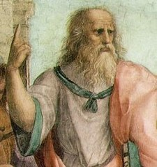

428 a. C. - 427 a. C.
Va desenvolupar un sistema filosòfic, el platonisme, de gran persistència, i un centre de formació, l'Acadèmia, que gaudiren de gran popularitat entre els elits grecoromanes.
Va ser deixeble de Cràtil i de Sòcrates, i mestre d'Aristòtil. En comparació amb altres socràtics, és anomenat el socràtic major.
